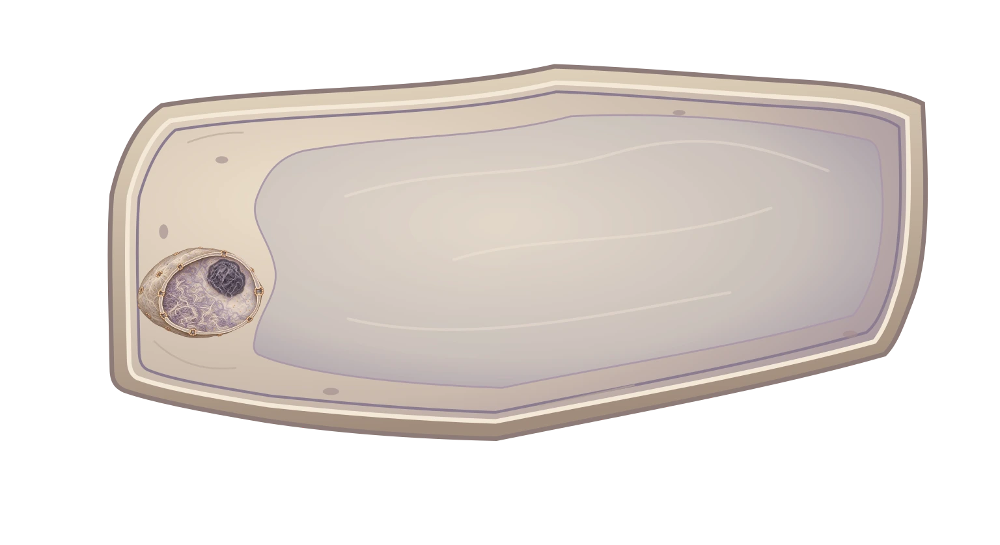
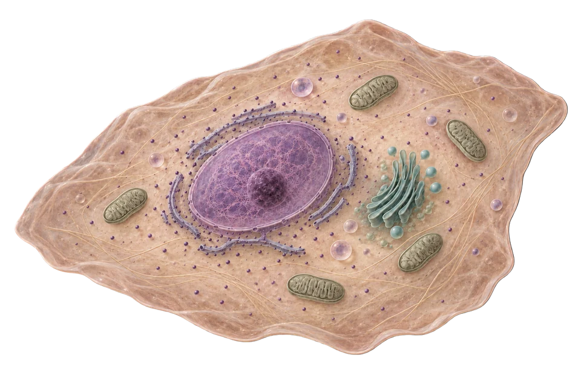

Three cells · illustration review
Plant uses the established original onion model adopted for the local learning journey. Human and E. coli retain the newer illustrations and remain upcoming. Select an image to inspect its transparent full-resolution file.


Plant cell · adopted original model
Source-derived preview of the existing cell model and nucleus, kept consistent through the local Plant journey. No new onion illustration.


Human cheek cell
Muted peach and cream. Less crowded ER lets the nucleus read first.

E. coli
Mineral sage and grey. Quiet flagella support the open interior.